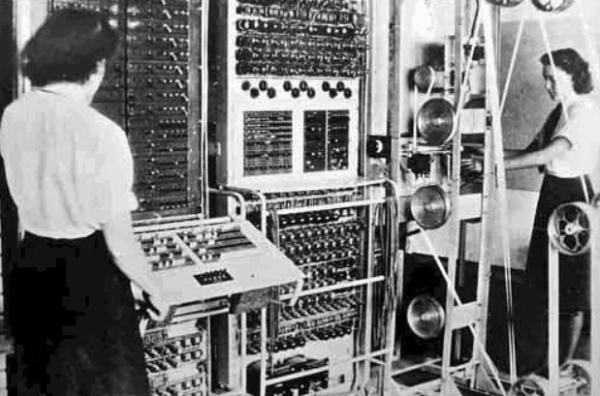
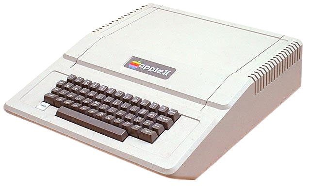

Linha do tempo
Primeira geração
texto

Terceira geração
A terceira geração de computadores aconteceu entre 1965 à 1975, e funcionavam através de circuitos
integrados. Esses circuitos integrados foram criados em setembro de 1958, Jack Kilby e Robert Noycep, e
basicamente são um chip de silício que tem iferentes componentes, formam assim, um circuito de tamanho
reduzido.
A tecnologia dos circuitos integrados possibilitou a criação de computadores menores e mais acessíveis,
e foi nessa geração que tivemos a criação do primeiro computador pessoal, como o Altair 8800 e o Apple
II. Além disso, tivemos o desenvolvimentos de linguagens de programação de alto nível como COBOL, FORTAN
e Pascal, que são portáteis, ou seja, podem ser usadas em outros dispositivos. Essas lingugens são
consideradas de alto nível por serem mais próximas da linguagem humana, diferente das lingugens de baixo
nível, como código binário, que tem semelhança com a lingugem de máquina.>

Quarta geração
O período da quarta geração aconteceu de 1971 à 1980, e os computadores deixaram de utilizar os circuitos
integrados, e passaram a utilizar os microprocessadores, que é um circuito integrado mais complexo, e
capaz de gerenciar todas as funções do computador, sendo conhecido como CPU (Unidade Central de
Processamento).
Gerais dos componentes dos computadores
Transistor
O transistor é um dispositivo eletrônico que substitui as válvulas termiônicas em circuitos
eletrônicos. Foi inventado nos Laboratórios Bell em 1947 por John Bardeen, William Shockley e Walter
Bratton.
Memória RAM
Foi inventada por Jay Forrester no MIT, e é um tipo de memória volátil, que armazena de maneira
temporaria as infromações que o processador precisa acessar rapidamente.
Disco rígido
1956: Foi inventado pela IBM e foi usado pela primeira vez em computadores mainframe, e basicamente é um
dispositivo de armazenamento de dados que utiliza discos magnéticos para armazenar informações.
Circuito integrados
1958: Um circuito integrado é um componente eletrônico contendo muitos transistores em um único chip. Foi
inventado por Jack Kilby e Robert Noyce da Fairchild.
Fonte de alimentação
1969: Ela que é responsável por fornecer energia para os outros componentes, e foi desenvolvida para o
computador da IBM, o System/3.
Microprocessador
1971: Microprocessador é um chip contendo uma unidade central de processamento (CPU) completa. Foi usado no
primeiro computador pessoal, o Altair 8800, inventado pela Intel.
Placa de vídeo
1976: Sua função é exibir imagens na tela do computador, e a primeira placa foi desenvolvida para o
computador IBM 3270.
Placa-mãe
1981: Conecta todos os componentes do computador, sendo a placa de circuito principal. Foi desenvolvida pela
empresa IBM e usada no primeiro computador pessoal, o IBM PC.